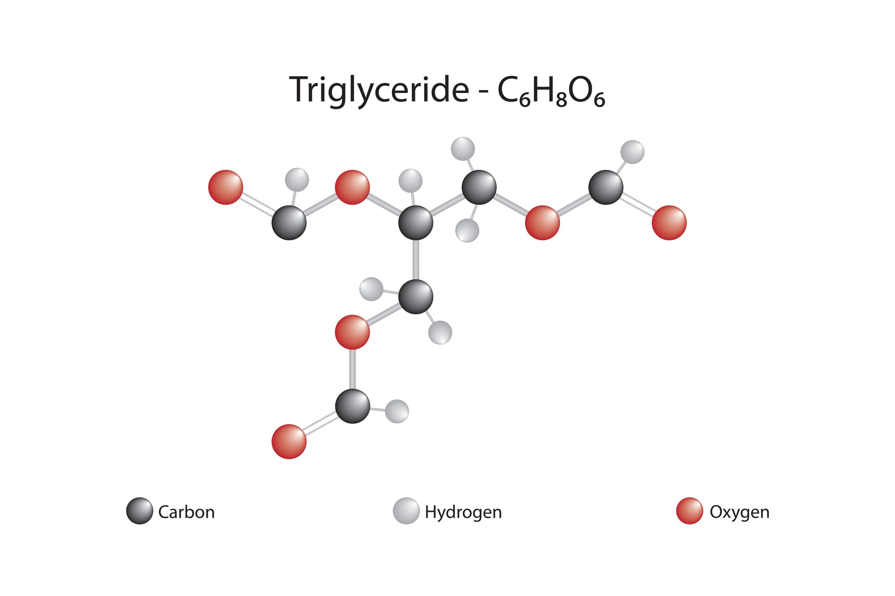
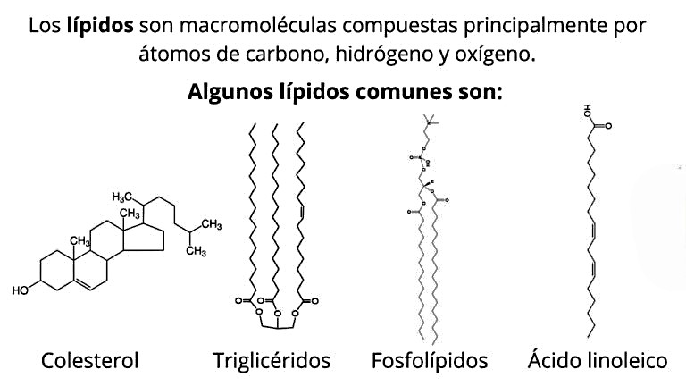
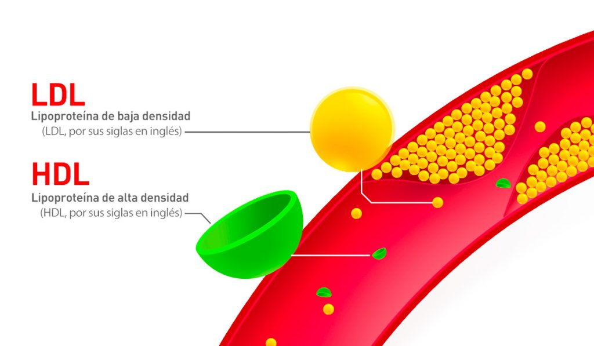

¿Qué son los lípidos?

Estructura molecular de un triglicérido.
Los lípidos son un grupo de biomoléculas orgánicas formadas principalmente por carbono, hidrógeno y oxígeno. Se caracterizan por ser insolubles en agua (hidrófobos), pero solubles en solventes orgánicos como el éter o el cloroformo.
No son polímeros como las proteínas o los ácidos nucleicos; en cambio, son moléculas diversas que comparten esa propiedad de hidrofobicidad. Se encuentran en todos los seres vivos y cumplen funciones vitales para el organismo.
Los lípidos aportan 9 kcal por gramo, el doble de energía que los carbohidratos o las proteínas.
Funciones principales
Los lípidos desempeñan roles fundamentales en el organismo. A continuación se presentan sus funciones más importantes:
Función Energética
Son la principal reserva de energía a largo plazo del organismo. Las grasas almacenadas en el tejido adiposo se movilizan cuando el cuerpo necesita combustible extra.
Función Estructural
Los fosfolípidos forman la bicapa lipídica de las membranas celulares, controlando el paso de sustancias hacia el interior y exterior de la célula.
Función Reguladora
Algunas hormonas esteroideas (como el estrógeno y la testosterona) y las vitaminas liposolubles (A, D, E, K) son de naturaleza lipídica y regulan procesos vitales.
Función Protectora
La grasa rodea y amortigua órganos vitales (riñones, corazón), protegiendo contra golpes. También forman la mielina que recubre los nervios.
Función Térmica
La grasa subcutánea actúa como aislante térmico, ayudando al cuerpo a mantener su temperatura interna estable frente a cambios del entorno.
Función de Transporte
Las vitaminas liposolubles A, D, E y K necesitan de los lípidos para ser absorbidas y transportadas a través de la sangre hasta los tejidos que las necesitan.
Tipos de lípidos
Los lípidos se clasifican principalmente en dos grandes grupos según su estructura química y si pueden o no reaccionar con una base para formar jabón (saponificarse):

Esquema general de clasificación de los lípidos.
Lípidos Saponificables
Contienen ácidos grasos en su estructura y pueden formar jabones al reaccionar con una base.
Triglicéridos (Grasas y Aceites)
Son la forma principal de almacenamiento de energía. Las grasas son sólidas a temperatura ambiente (origen animal) y los aceites son líquidos (origen vegetal). Se forman por glicerol + 3 ácidos grasos.
Fosfolípidos
Componentes clave de las membranas celulares. Tienen una "cabeza" polar (hidrófila) y dos "colas" no polares (hidrófobas), lo que les permite formar la bicapa lipídica.
Ceras
Ésteres de ácidos grasos con alcoholes de cadena larga. Cumplen función protectora: recubren hojas de plantas, plumas de aves y el conducto auditivo humano (cerumen).
Lípidos Insaponificables
No contienen ácidos grasos y no pueden formar jabones. Son estructuralmente muy distintos.
Terpenos
Moléculas derivadas del isopreno. Incluyen pigmentos como el caroteno (zanahoria), el mentol, el caucho y vitaminas como la A, E y K.
Esteroides
Se basan en un esqueleto de cuatro anillos de carbono. Incluyen el colesterol (membrana celular), hormonas sexuales (estrógeno, testosterona) y vitamina D.
Prostaglandinas
Moléculas con función reguladora local. Participan en la respuesta inflamatoria, la coagulación sanguínea y la contracción del músculo liso.
Grasas Saturadas
Las grasas saturadas son lípidos cuya cadena de ácidos grasos no contiene dobles enlaces entre sus átomos de carbono. Esto las hace más estables y sólidas a temperatura ambiente.
Se encuentran principalmente en alimentos de origen animal. Su consumo excesivo puede elevar el colesterol LDL en sangre, aumentando el riesgo de enfermedades cardiovasculares. Se recomienda consumirlas con moderación.
La OMS recomienda que las grasas saturadas representen menos del 10% de la ingesta calórica diaria total.

Alimentos ricos en grasas saturadas.
Grasas Insaturadas
Las grasas insaturadas son consideradas las grasas "saludables". Poseen uno o más dobles enlaces en su cadena y son líquidas a temperatura ambiente. Se dividen en dos tipos principales:
Grasas Monoinsaturadas
Contienen un solo doble enlace. Ayudan a reducir el colesterol LDL sin afectar el HDL. Se encuentran en el aceite de oliva, aguacate, almendras y maní.
Grasas Poliinsaturadas
Tienen dos o más dobles enlaces. Incluyen los famosos Omega-3 y Omega-6, esenciales para el cerebro y el corazón. Presentes en pescados azules, nueces y semillas de chía.
Alimentos Fuente
Aceite de oliva, aceite de girasol, aguacate, nueces, almendras, salmón, sardinas, semillas de lino y chía son algunas de las mejores fuentes de grasas insaturadas.

Beneficios para la Salud
Reducen el riesgo cardiovascular, disminuyen la inflamación, mejoran la función cerebral y ayudan a regular los niveles de colesterol en sangre cuando reemplazan a las grasas saturadas.
Colesterol LDL y HDL
El colesterol es un lípido esencial para el organismo, pero no viaja solo por la sangre: lo hace unido a proteínas transportadoras llamadas lipoproteínas. Las dos más importantes son el LDL y el HDL:

Comparación entre colesterol LDL (malo) y HDL (bueno).
Colesterol LDL
Lipoproteína de baja densidad. Conocido popularmente como el colesterol "malo".
¿Qué hace en el cuerpo?
Transporta el colesterol desde el hígado hacia los tejidos. Cuando hay exceso, puede acumularse en las paredes de las arterias, formando placas que obstruyen el flujo sanguíneo (aterosclerosis).
Alimentos que lo elevan
Carnes rojas grasosas, mantequilla, quesos maduros, embutidos, frituras, comida rápida y productos de pastelería industrial con grasas trans.
Nivel recomendado
Debe mantenerse por debajo de 100 mg/dL en adultos sanos. Niveles superiores a 160 mg/dL se consideran de riesgo cardiovascular alto.
Colesterol HDL
Lipoproteína de alta densidad. Conocido como el colesterol "bueno".
¿Qué hace en el cuerpo?
Recoge el colesterol sobrante de los tejidos y las arterias y lo transporta de regreso al hígado para ser eliminado. Actúa como un "limpiador" natural de las arterias.
Alimentos que lo elevan
Aceite de oliva, aguacate, nueces, pescado azul (salmón, atún, sardinas), semillas de lino y el ejercicio físico regular son los mejores aliados del HDL.
Nivel recomendado
Debe mantenerse por encima de 60 mg/dL. Niveles altos de HDL se asocian con menor riesgo de enfermedades cardíacas y mayor longevidad cardiovascular.
LDL vs HDL: resumen rápido
LDL — El "malo"
Obstruye las arterias. Se eleva con grasas saturadas, trans y una vida sedentaria. Meta: mantenerlo bajo.
HDL — El "bueno"
Limpia las arterias. Se eleva con grasas insaturadas, ejercicio y una dieta equilibrada. Meta: mantenerlo alto.
Alimentación Rica en Proteínas
Las proteínas son macronutrientes esenciales para construir y reparar tejidos, producir enzimas y hormonas, y sostener el sistema inmune. A menudo se combinan con lípidos en los alimentos de origen animal y vegetal:
Carnes Magras
El pollo sin piel, el pavo y los cortes magros de res o cerdo son excelentes fuentes de proteína de alto valor biológico con bajo contenido en grasa saturada.
Pescados y Mariscos
Salmón, atún, sardinas y camarones aportan proteína de calidad junto con ácidos grasos Omega-3 beneficiosos para el corazón y el cerebro.
Huevos
El huevo completo es uno de los alimentos más nutritivos: su clara aporta proteína pura y su yema contiene lípidos, colina y vitaminas esenciales como la D y la B12.
Legumbres
Frijoles, lentejas, garbanzos y soya son fuentes vegetales de proteína, ricas en fibra y bajas en grasas saturadas. La soya es la única legumbre con proteína completa comparable a la animal.
Lácteos
Leche, yogur griego y quesos frescos combinan proteína de calidad con calcio. Las versiones bajas en grasa permiten obtener los beneficios reduciendo la ingesta de grasas saturadas.
Frutos Secos y Semillas
Almendras, nueces, semillas de chía y quinoa aportan proteína vegetal junto con grasas insaturadas saludables, fibra y minerales esenciales como el magnesio.